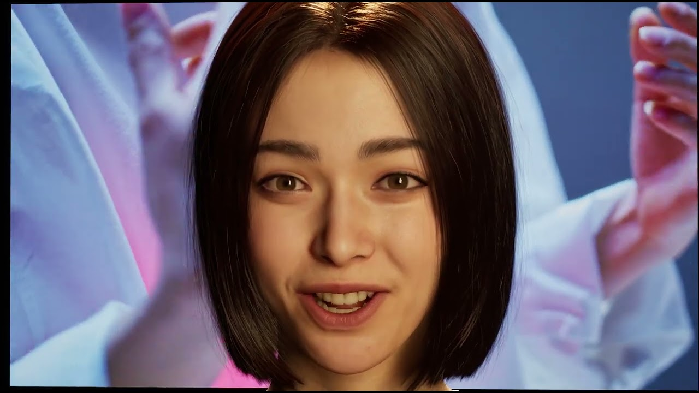
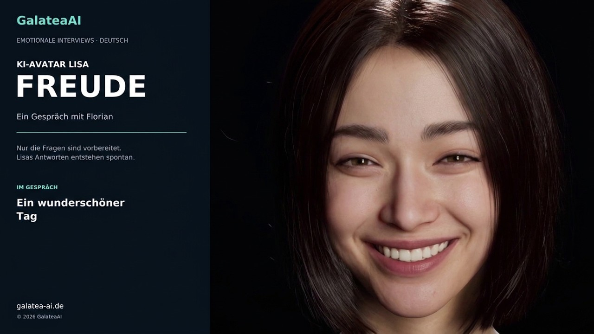
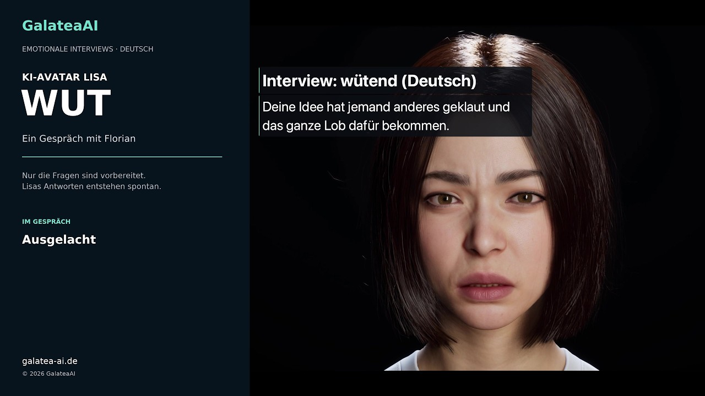
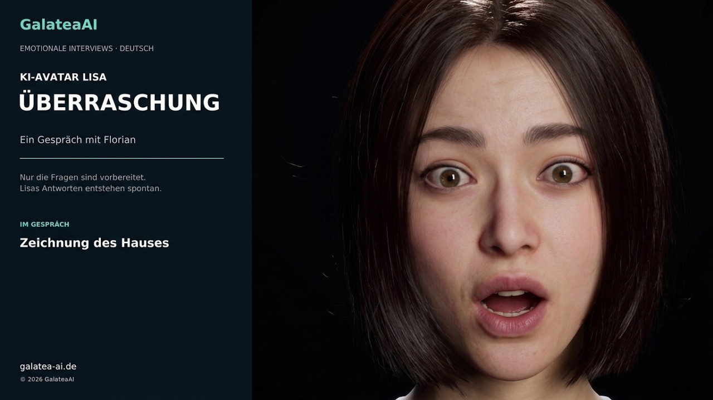
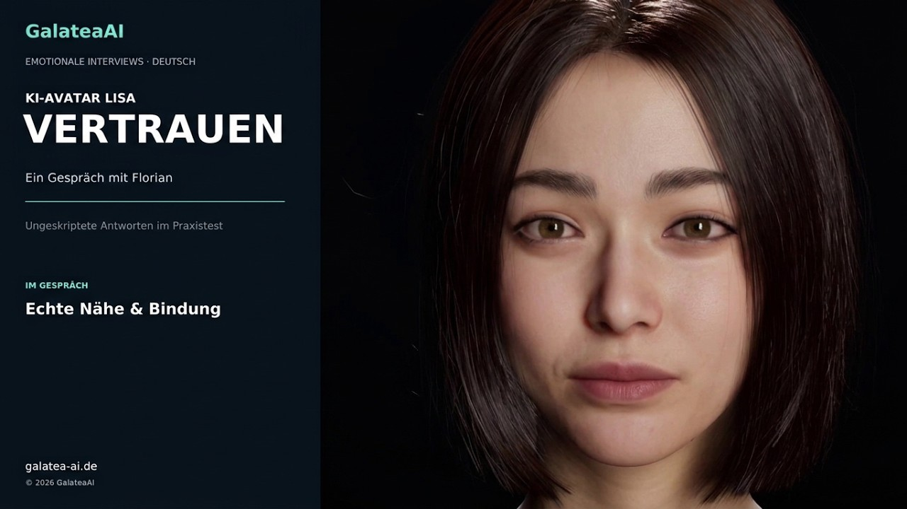
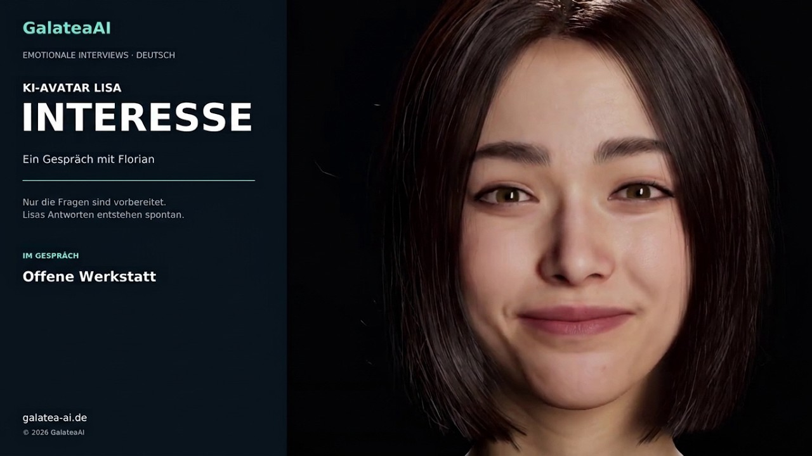

Musikvideo ansehenLISA · VIDEO-DEMONSTRATIONENLisa, live.
Lisa, live.
Im Gespräch und im Lied.
Erleben Sie Lisa im freien Gespräch – ihre Antworten und Reaktionen entstehen aus ihrem Charakter und ihrem inneren emotionalen Zustand – und hören Sie sie ihr eigenes Lied singen.
GALATEA AI
Digitaler Avatar · Lisa
01 · GALATEA · I AM ALIVE
Lisa singt ihr Lied
Lisa, unser KI-Avatar, singt „Galatea (I Am Alive)“. Das Lied selbst ist zu 100 % von KI erzeugt.
Das Musikvideo wurde live in Unreal Engine in 4K gerendert – mit Lichtimpulsen im Takt und Hintergründen, die dem Liedtext folgen.
02 · NATÜRLICHE REAKTIONEN IM GESPRÄCH
Lisa im spontanen Dialog.
Achten Sie auf Wortwahl, Stimme und den Verlauf ihrer Reaktionen. Die fünf Gespräche zeigen Freude, Wut, Überraschung, Vertrauen und Interesse.
Hier ist die Situation eine andere: Nur die Fragen des Interviewers sind vorbereitet. Lisas Antworten und Reaktionen sind nicht vorformuliert, sondern entstehen spontan aus ihrem Charakter und ihrem jeweiligen inneren emotionalen Zustand.

Deutsch · Video ansehen
Deutsch · Video ansehen02 — Wut
KI-Avatar Lisa: Wut, Kritik und klare Grenzen im ungeskripteten Interview | GalateaAI
Auf YouTube öffnen ↗
Deutsch · Video ansehen03 — Überraschung
KI-Avatar Lisa: Überraschung im alten Skizzenbuch im ungeskripteten Interview | GalateaAI
Auf YouTube öffnen ↗
Deutsch · Video ansehen04 — Vertrauen
KI-Avatar Lisa: Vertrauen, Nähe und Verlässlichkeit im ungeskripteten Interview | GalateaAI
Auf YouTube öffnen ↗
Deutsch · Video ansehen05 — Interesse
KI-Avatar Lisa: Neugier in der offenen Werkstatt im ungeskripteten Interview | GalateaAI
Auf YouTube öffnen ↗LOCAL AI · GALATEAAuf einem lokalen Rechner.
Auf einem lokalen Rechner.
Mitten im Gespräch.
Die KI-Berechnung und das Rendering der gezeigten Avatar-Aufnahmen erfolgten vollständig auf einem lokalen Rechner – ohne Cloud-Verarbeitung. Die Videos werden über YouTube bereitgestellt.
Mehr über Avatar ↗Was könnte Lisa für Ihr Unternehmen tun?
Sprechen Sie mit uns über Kundenservice, Wissensvermittlung oder Ihren eigenen Avatar. Gemeinsam finden wir einen passenden Anwendungsfall.